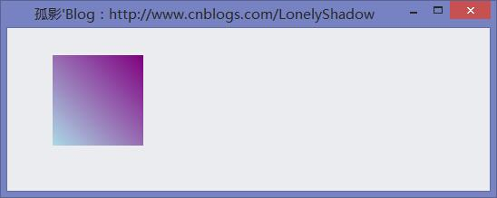
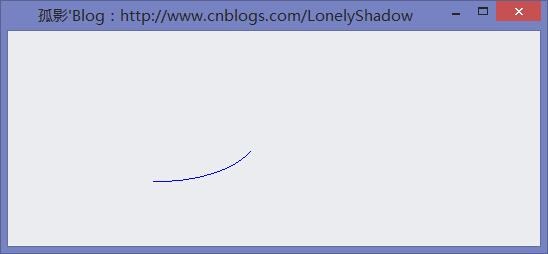
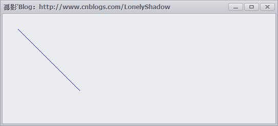
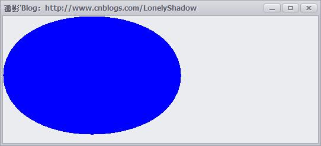
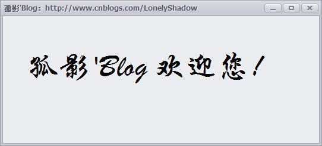
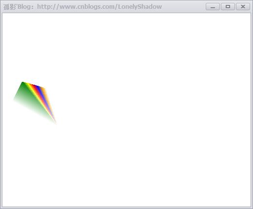
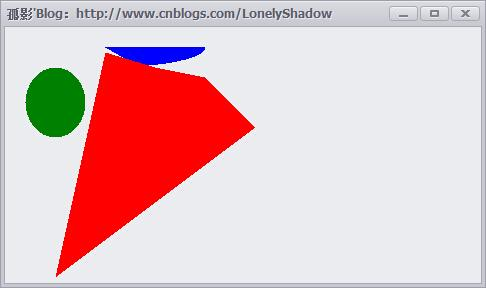
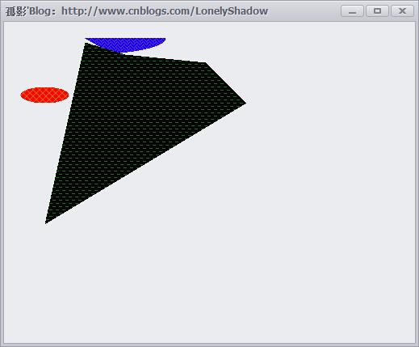
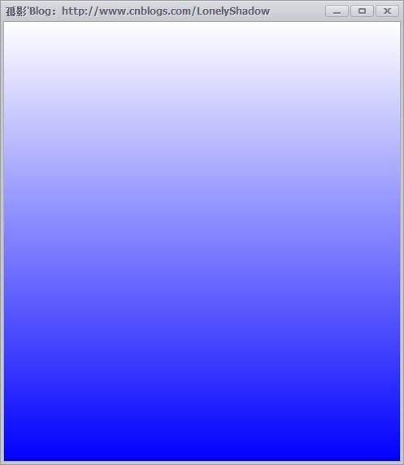
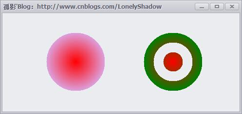

作者：孤影
来源：超全面的 .NET GDI+ 图形图像编程教程
目录
1 GDI+概述
2 Graphics类
2.1 Graphics类的方法成员
2.2 引用命名空间
3 常用画图对象
3.1 Pen类
3.2 Color结构
3.3 Font类
3.4 Brush类
3.5 Rectangle类
4 基本图形绘制举例
4.1 画一个矩形
4.2 画一个弧
4.3 画线
4.4 画椭圆
4.5 输出文本
4.6 填充路径
5 画刷和画刷类型
5.1 SolidBrush(单色画刷)
5.2 HatchBrush(阴影画刷)
5.3 TextureBrush(纹理笔刷)
5.4 LinearGradientBrush 和 PathGradientBrush(渐变笔刷)
5.4.1 LinearGradientBrush类
5.4.2 PathGradientBrush类
本篇主题内容是.NET GDI+图形图像编程系列的教程，不要被这个滚动条吓到，为了查找方便，我没有分开写，上面加了目录了，而且很多都是源码和图片~
GDI+绘图基础 编写图形程序时需要使用GDI(Graphics Device Interface，图形设备接口)。
从程序设计的角度看，GDI包括两部分：GDI对象和GDI函数。GDI对象定义了GDI函数使用的工具和环境变量；而GDI函数使用GDI对象绘制各种图形。
在C#中，进行图形程序编写时用到的是GDI+(Graphics Device Interface Plus，图形设备接口)版本，GDI+是GDI的进一步扩展，它使我们编程更加方便。
1 GDI+概述 GDI+是微软在Windows 2000以后操作系统中提供的新的图形设备接口，其通过一套部署为托管代码的类来实现，这套类被称为GDI+的“托管类接口”。
GDI+主要提供了一下三类服务：
1.二维矢量图形：GDI+提供了存储图形基元自身信息的类(或结构体)、存储图形基元绘制方式信息的类以及实际进行绘制的类。
2.图像处理：大多数图片都难以划定为直线和曲线的集合，无法使用二维矢量图形方式进行处理。因此，GDI+为我们提供了Bitmap、Image等类，它们可用于显示、操作和奥村BMP、JPG、GIF等图像格式。
3.文字显示：GDI+支持使用各种字体、字号和样式来显示文本。
我们要进行图形编程，就必须先讲解Graphics类，同时我们还必须掌握Pen、Brush和Rectangle这几种类。
GDI+比GDI优越主要表现在两个方面：
1.GDI+通过提供新功能(例如：渐变画笔和Alpha混合)扩展了GDI的功能；
2.修订了编程模型，是图形编程更加简易灵活。
2 Graphics类 Graphics类封装一个GDI+绘图图面，提供将对象绘制到现实设备的方法，Graphics与特定的设备上下文关联。
画图方法都被包括在Graphics类中国，在画任何对象(例如：Circle Rectangle)时，我们首先要创建一个Graphics类实例，这个实例相当于建立了一块画布，有了画布才可以用各种画图方法进行绘图。
绘图程序的设计过程一般分为两个步骤：1.创建Graphics；2.使用Graphics对象的方法绘图、显示文本或处理图像。
通常我们使用下述三种方法来创建一个Graphics对象：
方法一：利用控件或窗体的Paint事件中的PaintEventArgs
在窗体或控件的Paint事件中接受对图形对象的引用，作为PaintEventArgs(PaintEventArgs指定绘制控件所用的Graphics)的一部分，在为控件创建绘制代码时，通常会使用此方法来获取对图形对象的引用。例如：
1 2 3 4 5 6 7 8 9 10 11 // 窗体的Paint事件的响应方法 private void Frm_Demo_Paint(object sender, PaintEventArgs e) { Graphics _Graphics = e.Graphics; } // 也可以直接重载控件或窗体的OnPaint方法 protected override void OnPaint(PaintEventArgs e) { Graphics _Graphics = e.Graphics; }
Paint事件在重绘控件时发生。
方法二：调用某控件或窗体的CreateGraphics方法
调用某控件或窗体的CreateGraphics方法以获取对Graphics对象的引用，该对象表示该控件或窗体的绘图图面。
如果想在已存在的窗体或控件上绘图，通常会使用此方法，例如：
Graphics _Graphics = this.CreateGraphics(); // 在当前窗体上创建Graphics对象
方法三：调用Graphics类的FromImage静态方法
由从Image集成的任何对象创建Graphics对象。在需要更改已存在的图像时，通常会使用此方法。例如：
使用Graphics.FromImage()方法 创建Graphics对象
Image img = Image.FromFile(“孤影.jpg”); // 建立Image对象Graphics _Graphics = Graphics.FromImage(img); // 创建Graphics对象
2.1 Graphics类的方法成员 有了一个Graphics的对象引用后，就可以利用该对象的成员进行各种各样图形的绘制，下面表格列出了Graphics类的常用方法成员：
Graphics类常用方法成员
名称
说明
名称
说明
DrawArc
画弧
DrawBezier
画立体的贝尔塞曲线
DrawBeziers
画连续立体的贝尔塞曲线
DrawClosedCurve
画闭合曲线
DrawCurve
画曲线
DrawEllipse
画椭圆
DrawImage
画图像
DrawLine
画线
DrawPath
通过路径画线和曲线
DrawPie
画饼形
DrawPolygon
画多边形
DrawRectangle
画矩形
DrawString
绘制文字
FillEllipse
填充椭圆
FillPath
填充路径
FillPie
填充饼图
FillPolygon
填充多边形
FillRectangle
填充矩形
FillRectangles
填充矩形组
FillRegion
填充区域
在.NET中，GDI+的所有绘图功能都包括在System、System.Drawimg、System.Drawimg.Imaging、System.Drawimg.Drawimg2D和System.Drawimg.Text等命名空间中，因此开始用GDI+类之前，需要先引用相应的命名空间。
2.2 引用命名空间 在C#应用程序中使用using命令引用给定的命名空间或类，下面是一个C#应用程序引用命名空间的例子：
1 2 3 4 5 6 7 using System; using System.Collections.Generic; using System.Data; using System.ComponentModel; using System.Drawing; using System.Drawing.Drawing2D; using System.Drawing.Imaging;
3 常用画图对象 在创建了Graphics对象后，就可以用它开始绘图了，可以画线、填充图形、显示文本等等，其中主要用到的对象还有：
Pen：用来用patterns、colors或者bitmaps进行填充
Color：用来画线和多边形，包括矩形、圆和饼形
Font：用来给文字设置字体格式
Brush：用来描述颜色
Rectangle：矩形结构通常用来在窗体上画矩形
Point：描述一对有序的x,y两个坐标值
3.1 Pen类 Pen类用来绘制指定宽度和样式的直线。使用DashStyle属性绘制几种虚线，可以使用各种各样填充样式(包括纯色和纹理)来填充Pen绘制的直线，填充模式取决于画笔或用作填充对象的纹理。
使用画笔时，需要先实例化一个画笔对象，主要有以下几种方法：
1 2 3 4 5 6 7 8 9 10 11 12 13 14 15 16 // 用指定的颜色实例化一只画笔 public Pen(Color); // 用指定的画刷实例化一只画笔 public Pen(Brush); // 用指定的画刷和宽度实例化一只画笔 public Pen(Brush, float); // 用指定的颜色和宽度实例化一只画笔 public Pen(Color, float); // 实例化画笔格式如下： Pen pen = new Pen(Color.Blue); // 或者： Pen pen = new Pen(Color.Blue, 100);
Pen常用的属性如下：
Pen常用属性
名称
说明
名称
说明
Alignment
获得或者设置画笔的对齐方式
Brush
获得或者设置画笔的属性
Color
获得或者设置画笔的颜色
Width
获得或者设置画笔的宽度
3.2 Color结构 在自然界中，颜色大都由透明度(A)和三基色(R,G,B)所组成。在GDI+中，通过Color结构封装对颜色的定义，Color结构中，除了提供(A,R,G,B)以外，还提供许多系统定义的颜色，如Pink(粉色)。另外，还提供许多静态成员，用户对颜色进行操作。
Color结构的基本属性如下表：
颜色的基本属性
名称
说明
A
获取此Color结构的Alpha分量值，取值(0~255)
R
获取此Color结构的红色分量值，取值(0~255)
G
获取此Color结构的绿色分量值，取值(0~255)
B
获取此Color结构的蓝色分量值，取值(0~255)
Name
获取此Color结构的名称，这将返回用户定义的颜色的名称或已知颜色的名称(如果该颜色是从某个名称创建的)。对于自定义的颜色，这将返回RGB值。
Color结构的基本(静态)方法如下表：
颜色的基本方法
名称
说明
FromArgb
从四个8位的ARGB分量(Alpha、红色、绿色和蓝色)值创建Color结构
FromKnowColor
从指定饿预定义颜色创建一个Color结构
FromName
从预定义颜色的指定名称创建一个Color结构。
Color结构变量可以通过已有颜色构造，也可以通过RGB建立，例如：
创建Color构造对象
1 2 3 Color color1 = Color.FromArgb(96, 06, 25); Color color2 = Color.FromKnownColor(KnownColor.Blue); // KnowColor为枚举类型 Color color3 = Color.FromName("LightBlue");
在图像处理中一般需要获取或设置像素的颜色值，获取一幅图像的某个像素颜色值得具体步骤如下：
1.定义Bitmap
1 Bitmap bitmap = new Bitmap("D:\\孤影\\LonelyShadow.bmp");
2.定义一个颜色变量，把在指定位置所取得的像素值存入颜色变量中
1 2 Color color = new Color(); color = bitmap.GetPixel(10, 10); // 获取此Bitmap中指定像素的颜色
3.将颜色值分解出单色分量值
1 2 3 4 int r, g, b; r = color.R; g = color.G; b = color.B;
3.3 Font类 Font类定义特定文本格式，包括字体、字号和字形属性。Font类的常用构造函数是：
public Font(string 字体名, float 字号, FontStyle 字形) 其中字号和字体为可选项
public Font(string 字体名, float 字号) 其中字体名为Font的FontFamily的字符串表示形式
下面是定义一个F哦你团队相爱难过的示例代码：
1 2 FontFamily fontFamily = new FontFamily("Arial"); Font font = new Font(fontFamily, 16, FontStyle.Regular, GraphicsUnit.Pixel);
字体常用属性如下表：
字体的常用属性
名称
说明
名称
说明
Bold
是否为粗体
FontFamily
字体成员
Height
字体高
Italic
是否为斜体
Name
字体名称
Size
字体尺寸
SizeInPoints
获取此Font对象的字号，以磅为单位
Strikeout
是否有删除线
Style
字体类型
Underline
Unit
Unit
字体尺寸单位
3.4 Brush类 Brush类是一个抽象的基类，因此它不能被实例化，我们总是用它的派生类进行实例化一个画刷的对象，当我们对图形内部进行填充操作时就会用到画刷，关于画刷在 [1.5] 中有详细的讲解。
3.5 Rectangle结构 存储一组整数，共四个，表示一个矩形的位置和大小。
矩形结构通常用来在窗体上画矩形，除了利用它的构造函数矩形对象外，还可以利用Rectangle结构的属性成员，其属性成员如下表：
Rectangle结构属性
名称
说明
名称
说明
Bottom
底端坐标
Height
矩形高
IsEmpty
测试矩形宽和高是否为0
Left
矩形左边坐标
Location
矩形的位置
Right
矩形右边坐标
Size
矩形尺寸
Top
矩形顶端坐标
Width
矩形宽
X
矩形左上角顶点X坐标
Y
矩形左上角顶点Y坐标
Rectangle结构的构造函数有以下两个：
Rectangle结构的构造函数
1 2 3 // 用指定的位置和大小初始化Rectangle类的新实例 public Rectangle(Point, Size); // Size结构存储一个有序整数对，通常为矩形的宽度和高度 public Rectangle(int, int, int, int);
3.6 Point结构 用指定坐标初始化Point类的新实例，这个结构很像C++的Point结构，它描述了一对有序的x,y两个坐标值，其构造函数为：
public Point(int x, int y); 其中x为该点的水平位置；y为该点的垂直位置。
下面是构造Point对象的示例代码：
1 2 Point pt1 = new Point(30, 30); Point pt2 = new Point(110, 110);
4 基本图形绘制举例 4.1 画一个矩形 建一个C#.NET WinForms窗体应用程序，通过在窗体的OnPaint事件中绘制一个填充的渐变矩形：
填充矩形方法FillRectangle()的语法帮助定义如下：
1 2 3 4 5 6 7 8 9 10 11 12 13 14 15 16 17 18 19 20 21 22 23 24 25 26 27 28 29 30 31 32 33 34 35 36 37 38 39 40 41 42 43 44 45 46 47 48 49 50 51 52 53 54 55 56 57 58 59 60 61 62 63 64 65 66 67 68 69 70 71 72 73 74 75 76 77 78 // // 摘要: // 填充 System.Drawing.Rectangle 结构指定的矩形的内部。 // // 参数: // brush: // 确定填充特性的 System.Drawing.Brush。 // // rect: // System.Drawing.Rectangle 结构，它表示要填充的矩形。 // // 异常: // System.ArgumentNullException: // brush 为 null。 public void FillRectangle(Brush brush, Rectangle rect); // // 摘要: // 填充 System.Drawing.RectangleF 结构指定的矩形的内部。 // // 参数: // brush: // 确定填充特性的 System.Drawing.Brush。 // // rect: // System.Drawing.RectangleF 结构，它表示要填充的矩形。 // // 异常: // System.ArgumentNullException: // brush 为 null。 public void FillRectangle(Brush brush, RectangleF rect); // // 摘要: // 填充由一对坐标、一个宽度和一个高度指定的矩形的内部。 // // 参数: // brush: // 确定填充特性的 System.Drawing.Brush。 // // x: // 要填充的矩形的左上角的 x 坐标。 // // y: // 要填充的矩形的左上角的 y 坐标。 // // width: // 要填充的矩形的宽度。 // // height: // 要填充的矩形的高度。 // // 异常: // System.ArgumentNullException: // brush 为 null。 public void FillRectangle(Brush brush, float x, float y, float width, float height); // // 摘要: // 填充由一对坐标、一个宽度和一个高度指定的矩形的内部。 // // 参数: // brush: // 确定填充特性的 System.Drawing.Brush。 // // x: // 要填充的矩形的左上角的 x 坐标。 // // y: // 要填充的矩形的左上角的 y 坐标。 // // width: // 要填充的矩形的宽度。 // // height: // 要填充的矩形的高度。 // // 异常: // System.ArgumentNullException: // brush 为 null。 public void FillRectangle(Brush brush, int x, int y, int width, int height);
我们在这里只使用第一种定义，演示填充矩形，示例代码如下：
1 2 3 4 5 6 7 8 9 10 11 12 13 /// <summary> /// 窗体的Paint事件的响应方法 /// </summary> /// <param name="sender">当前事件触发者(当前窗体)</param> /// <param name="e">附带的事件参数</param> private void Frm_Demo_Paint(object sender, PaintEventArgs e) { Graphics g = e.Graphics; // 创建当前窗体的Graphics对象 Rectangle rect = new Rectangle(50, 30, 100, 100); // 创建一个矩形(x,y,width,height) // 创建线性渐变画刷(画刷界限, 起始颜色, 结束颜色, 渐变角度) LinearGradientBrush lBrush = new LinearGradientBrush(rect, Color.Purple, Color.LightBlue, LinearGradientMode.BackwardDiagonal); g.FillRectangle(lBrush, rect); // 走起~ }
上述代码运行效果如下：

4.2 画一个弧 画弧线的语法定义如下：
1 2 3 4 5 6 7 8 9 10 11 12 13 14 15 16 17 18 19 20 21 // // 摘要: // 绘制一段弧线，它表示 System.Drawing.Rectangle 结构指定的椭圆的一部分。 // // 参数: // pen: // System.Drawing.Pen，它确定弧线的颜色、宽度和样式。 // // rect: // System.Drawing.RectangleF 结构，它定义椭圆的边界。 // // startAngle: // 从 x 轴到弧线的起始点沿顺时针方向度量的角（以度为单位）。 // // sweepAngle: // 从 startAngle 参数到弧线的结束点沿顺时针方向度量的角（以度为单位）。 // // 异常: // System.ArgumentNullException: // pen 为 null。 public void DrawArc(Pen pen, Rectangle rect, float startAngle, float sweepAngle);
参照定义的帮助，可写出如下画弧线的代码：
1 2 3 4 5 6 7 8 9 10 11 12 /// <summary> /// 窗体的Paint事件的响应方法 /// </summary> /// <param name="sender">当前事件触发者(当前窗体)</param> /// <param name="e">附带的事件参数</param> private void Frm_Demo_Paint(object sender, PaintEventArgs e) { Graphics graphics = e.Graphics; Pen pen = new Pen(Color.Blue); Rectangle rect = new Rectangle(50,50,200,100); graphics.DrawArc(pen, rect, 12, 84); }
上述代码运行结果如下：

4.3 画线 画线DrawLine()方法的语法定义如下：
1 2 3 4 5 6 7 8 9 10 11 12 13 14 15 16 17 18 19 20 21 22 23 24 25 26 27 28 29 30 31 32 33 34 35 36 37 38 39 40 41 42 43 44 45 46 47 48 49 50 51 52 53 54 55 56 57 58 59 60 61 62 63 64 65 66 67 68 69 70 71 72 73 74 75 76 77 78 79 80 81 82 83 84 // // 摘要: // 绘制一条连接两个 System.Drawing.Point 结构的线。 // // 参数: // pen: // System.Drawing.Pen，它确定线条的颜色、宽度和样式。 // // pt1: // System.Drawing.Point 结构，它表示要连接的第一个点。 // // pt2: // System.Drawing.Point 结构，它表示要连接的第二个点。 // // 异常: // System.ArgumentNullException: // pen 为 null。 public void DrawLine(Pen pen, Point pt1, Point pt2); // // 摘要: // 绘制一条连接两个 System.Drawing.PointF 结构的线。 // // 参数: // pen: // System.Drawing.Pen，它确定线条的颜色、宽度和样式。 // // pt1: // System.Drawing.PointF 结构，它表示要连接的第一个点。 // // pt2: // System.Drawing.PointF 结构，它表示要连接的第二个点。 // // 异常: // System.ArgumentNullException: // pen 为 null。 public void DrawLine(Pen pen, PointF pt1, PointF pt2); // // 摘要: // 绘制一条连接由坐标对指定的两个点的线条。 // // 参数: // pen: // System.Drawing.Pen，它确定线条的颜色、宽度和样式。 // // x1: // 第一个点的 x 坐标。 // // y1: // 第一个点的 y 坐标。 // // x2: // 第二个点的 x 坐标。 // // y2: // 第二个点的 y 坐标。 // // 异常: // System.ArgumentNullException: // pen 为 null。 public void DrawLine(Pen pen, float x1, float y1, float x2, float y2); // // 摘要: // 绘制一条连接由坐标对指定的两个点的线条。 // // 参数: // pen: // System.Drawing.Pen，它确定线条的颜色、宽度和样式。 // // x1: // 第一个点的 x 坐标。 // // y1: // 第一个点的 y 坐标。 // // x2: // 第二个点的 x 坐标。 // // y2: // 第二个点的 y 坐标。 // // 异常: // System.ArgumentNullException: // pen 为 null。 public void DrawLine(Pen pen, int x1, int y1, int x2, int y2);
根据定义的帮助，我们以第一种语法 可以写出如下示例代码：
1 2 3 4 5 6 7 8 9 10 11 12 13 /// <summary> /// 窗体的Paint事件的响应方法 /// </summary> /// <param name="sender">当前事件触发者(当前窗体)</param> /// <param name="e">附带的事件参数</param> private void Frm_Demo_Paint(object sender, PaintEventArgs e) { Graphics graphics = e.Graphics; // 创建当前窗体的Graphics对象 Pen pen = new Pen(Color.Blue); // 创建蓝色画笔对象 Point pointStart = new Point(30, 30); // 创建起始点 Point pointEnd = new Point(150, 150); // 创建结束点 graphics.DrawLine(pen, pointStart, pointEnd); // 画线 }
上述代码运行效果图如下：

4.4 画椭圆 还是先看一下DrawEllipse()画椭圆的语法定义：
1 2 3 4 5 6 7 8 9 10 11 12 13 14 15 16 17 18 19 20 21 22 23 24 25 26 27 28 29 30 31 32 33 34 35 36 37 38 39 40 41 42 43 44 45 46 47 48 49 50 51 52 53 54 55 56 57 58 59 60 61 62 63 64 65 66 67 68 69 70 71 72 73 74 75 76 77 78 // // 摘要: // 绘制边界 System.Drawing.Rectangle 结构指定的椭圆。 // // 参数: // pen: // System.Drawing.Pen，它确定曲线的颜色、宽度和样式。 // // rect: // System.Drawing.Rectangle 结构，它定义椭圆的边界。 // // 异常: // System.ArgumentNullException: // pen 为 null。 public void DrawEllipse(Pen pen, Rectangle rect); // // 摘要: // 绘制边界 System.Drawing.RectangleF 定义的椭圆。 // // 参数: // pen: // System.Drawing.Pen，它确定曲线的颜色、宽度和样式。 // // rect: // System.Drawing.RectangleF 结构，它定义椭圆的边界。 // // 异常: // System.ArgumentNullException: // pen 为 null。 public void DrawEllipse(Pen pen, RectangleF rect); // // 摘要: // 绘制一个由边框（该边框由一对坐标、高度和宽度指定）定义的椭圆。 // // 参数: // pen: // System.Drawing.Pen，它确定曲线的颜色、宽度和样式。 // // x: // 定义椭圆的边框的左上角的 X 坐标。 // // y: // 定义椭圆的边框的左上角的 Y 坐标。 // // width: // 定义椭圆的边框的宽度。 // // height: // 定义椭圆的边框的高度。 // // 异常: // System.ArgumentNullException: // pen 为 null。 public void DrawEllipse(Pen pen, float x, float y, float width, float height); // // 摘要: // 绘制一个由边框定义的椭圆，该边框由矩形的左上角坐标、高度和宽度指定。 // // 参数: // pen: // System.Drawing.Pen，它确定曲线的颜色、宽度和样式。 // // x: // 定义椭圆的边框的左上角的 X 坐标。 // // y: // 定义椭圆的边框的左上角的 Y 坐标。 // // width: // 定义椭圆的边框的宽度。 // // height: // 定义椭圆的边框的高度。 // // 异常: // System.ArgumentNullException: // pen 为 null。 public void DrawEllipse(Pen pen, int x, int y, int width, int height);
参照上面的语法定义，我们根据第一种语法，可以写出如下示例代码：
1 2 3 4 5 6 7 8 9 10 11 12 /// <summary> /// 窗体的Paint事件的响应方法 /// </summary> /// <param name="sender">当前事件触发者(当前窗体)</param> /// <param name="e">附带的事件参数</param> private void Frm_Demo_Paint(object sender, PaintEventArgs e) { Graphics graphics = e.Graphics; // 创建当前窗体的Graphics对象 Pen pen = new Pen(Color.Blue, 100); // 创建蓝色 粗细为100的画笔对象 Rectangle rect = new Rectangle(50, 50, 200, 100); // 创建椭圆所在的矩形范围 graphics.DrawEllipse(pen, rect); // 在指定的范围内画椭圆 }
上述代码运行结果如下：

4.5 输出文本 输出文本用到的是Graphics对象的DrawString()方法，语法定义如下：
1 2 3 4 5 6 7 8 9 10 11 12 13 14 15 16 17 18 19 20 21 22 23 24 25 26 27 28 29 30 31 32 33 34 35 36 37 38 39 40 41 42 43 44 45 46 47 48 49 50 51 52 53 54 55 56 57 58 59 60 61 62 63 64 65 66 67 68 69 70 71 72 73 74 75 76 77 78 79 80 81 82 83 84 85 86 87 88 89 90 91 92 93 94 95 96 97 98 99 100 101 102 103 104 105 106 107 108 109 110 111 112 113 114 115 116 117 118 119 120 121 122 123 124 125 126 127 128 129 130 131 132 133 134 135 136 137 138 139 140 141 142 143 144 // // 摘要: // 在指定位置并且用指定的 System.Drawing.Brush 和 System.Drawing.Font 对象绘制指定的文本字符串。 // // 参数: // s: // 要绘制的字符串。 // // font: // System.Drawing.Font，它定义字符串的文本格式。 // // brush: // System.Drawing.Brush，它确定所绘制文本的颜色和纹理。 // // point: // System.Drawing.PointF 结构，它指定所绘制文本的左上角。 // // 异常: // System.ArgumentNullException: // brush 为 null。 - 或 - s 为 null。 public void DrawString(string s, Font font, Brush brush, PointF point); // // 摘要: // 在指定矩形并且用指定的 System.Drawing.Brush 和 System.Drawing.Font 对象绘制指定的文本字符串。 // // 参数: // s: // 要绘制的字符串。 // // font: // System.Drawing.Font，它定义字符串的文本格式。 // // brush: // System.Drawing.Brush，它确定所绘制文本的颜色和纹理。 // // layoutRectangle: // System.Drawing.RectangleF 结构，它指定所绘制文本的位置。 // // 异常: // System.ArgumentNullException: // brush 为 null。 - 或 - s 为 null。 public void DrawString(string s, Font font, Brush brush, RectangleF layoutRectangle); // // 摘要: // 在指定位置并且用指定的 System.Drawing.Brush 和 System.Drawing.Font 对象绘制指定的文本字符串。 // // 参数: // s: // 要绘制的字符串。 // // font: // System.Drawing.Font，它定义字符串的文本格式。 // // brush: // System.Drawing.Brush，它确定所绘制文本的颜色和纹理。 // // x: // 所绘制文本的左上角的 x 坐标。 // // y: // 所绘制文本的左上角的 y 坐标。 // // 异常: // System.ArgumentNullException: // brush 为 null。 - 或 - s 为 null。 public void DrawString(string s, Font font, Brush brush, float x, float y); // // 摘要: // 使用指定 System.Drawing.StringFormat 的格式化特性，用指定的 System.Drawing.Brush 和 System.Drawing.Font // 对象在指定的位置绘制指定的文本字符串。 // // 参数: // s: // 要绘制的字符串。 // // font: // System.Drawing.Font，它定义字符串的文本格式。 // // brush: // System.Drawing.Brush，它确定所绘制文本的颜色和纹理。 // // point: // System.Drawing.PointF 结构，它指定所绘制文本的左上角。 // // format: // System.Drawing.StringFormat，它指定应用于所绘制文本的格式化特性（如行距和对齐方式）。 // // 异常: // System.ArgumentNullException: // brush 为 null。 - 或 - s 为 null。 public void DrawString(string s, Font font, Brush brush, PointF point, StringFormat format); // // 摘要: // 使用指定 System.Drawing.StringFormat 的格式化特性，用指定的 System.Drawing.Brush 和 System.Drawing.Font // 对象在指定的矩形绘制指定的文本字符串。 // // 参数: // s: // 要绘制的字符串。 // // font: // System.Drawing.Font，它定义字符串的文本格式。 // // brush: // System.Drawing.Brush，它确定所绘制文本的颜色和纹理。 // // layoutRectangle: // System.Drawing.RectangleF 结构，它指定所绘制文本的位置。 // // format: // System.Drawing.StringFormat，它指定应用于所绘制文本的格式化特性（如行距和对齐方式）。 // // 异常: // System.ArgumentNullException: // brush 为 null。 - 或 - s 为 null。 public void DrawString(string s, Font font, Brush brush, RectangleF layoutRectangle, StringFormat format); // // 摘要: // 使用指定 System.Drawing.StringFormat 的格式化特性，用指定的 System.Drawing.Brush 和 System.Drawing.Font // 对象在指定的位置绘制指定的文本字符串。 // // 参数: // s: // 要绘制的字符串。 // // font: // System.Drawing.Font，它定义字符串的文本格式。 // // brush: // System.Drawing.Brush，它确定所绘制文本的颜色和纹理。 // // x: // 所绘制文本的左上角的 x 坐标。 // // y: // 所绘制文本的左上角的 y 坐标。 // // format: // System.Drawing.StringFormat，它指定应用于所绘制文本的格式化特性（如行距和对齐方式）。 // // 异常: // System.ArgumentNullException: // brush 为 null。 - 或 - s 为 null。 public void DrawString(string s, Font font, Brush brush, float x, float y, StringFormat format);
根据上述定义，我们以 public void DrawString(string s, Font font, Brush brush, float x,float y); 语法可以写出如下示例代码：
1 2 3 4 5 6 7 8 9 10 11 /// <summary> /// 窗体的Paint事件的响应方法 /// </summary> /// <param name="sender">当前事件触发者(当前窗体)</param> /// <param name="e">附带的事件参数</param> private void Frm_Demo_Paint(object sender, PaintEventArgs e) { Font font = new Font("华文行楷", 40); // 创建Font字体对象 Graphics graphics = e.Graphics; // 创建当前窗体的Graphics对象 graphics.DrawString("孤影'Blog 欢迎您！", font, new SolidBrush(Color.Black), 30, 60); }
上述代码运行结果如下：

4.6 填充路径 填充路径的语法定义如下：
1 2 3 4 5 6 7 8 9 10 11 12 13 14 15 // // 摘要: // 填充 System.Drawing.Drawing2D.GraphicsPath 的内部。 // // 参数: // brush: // 确定填充特性的 System.Drawing.Brush。 // // path: // System.Drawing.Drawing2D.GraphicsPath，它表示要填充的路径。 // // 异常: // System.ArgumentNullException: // brush 为 null。 - 或 - path 为 null。 public void FillPath(Brush brush, GraphicsPath path);
根据上述语法定义，可写出如下示例代码：
1 2 3 4 5 6 7 8 9 10 11 12 13 14 15 16 17 18 19 20 21 22 23 24 25 26 27 28 29 30 31 /// <summary> /// 窗体的Paint事件的响应方法 /// </summary> /// <param name="sender">当前事件触发者(当前窗体)</param> /// <param name="e">附带的事件参数</param> private void Frm_Demo_Paint(object sender, PaintEventArgs e) { Graphics graphics = e.Graphics; // 创建当前窗体的Graphics对象 graphics.FillRectangle(new SolidBrush(Color.White), this.ClientRectangle); // 以白色画刷填充当前窗体 // 创建线组 GraphicsPath path = new GraphicsPath(new Point[] { new Point(40,140), new Point(275,200), new Point(105,225), new Point(190,300), new Point(50,350), new Point(20,180) }, new byte[] { (byte)PathPointType.Start, (byte)PathPointType.Bezier, (byte)PathPointType.Bezier, (byte)PathPointType.Bezier, (byte)PathPointType.Line, (byte)PathPointType.Line }); // 路径笔刷 PathGradientBrush pathGradientBrush = new PathGradientBrush(path); // 设置路径中的点对应的颜色数组 pathGradientBrush.SurroundColors = new Color[] { Color.Green, Color.Yellow, Color.Red, Color.Blue, Color.Orange, Color.White }; graphics.FillPath(pathGradientBrush, path); // 填充路径 }
上述代码运行结果如下：

注意：GraphicsPath类位于命名空间“System.Drawimg.Drawimg2D”中，表示一系列相互连接的直线和曲线。
5 画刷和画刷类型 Brush类型是一个抽象类，所以它不能被实例化，也就是不能直接应用，但是我们可以利用他的派生类，如：HatchBrush、SolidBrush和TextureBrush等。
画刷类型一般在“System.Drawing”命名空间中，如果应用HatchBrush和GradientBrush画刷，需要在程序中引入“System.Drawing2D”命名空间。
5.1 SolidBrush(单色画刷) 它是一种一般的画刷，通常只用一种颜色去填充GDI+图形，例如如下示例代码：
1 2 3 4 5 6 7 8 9 10 11 12 13 14 15 16 17 18 19 20 21 22 23 24 25 26 /// <summary> /// 窗体的Paint事件的响应方法 /// </summary> /// <param name="sender">当前事件触发者(当前窗体)</param> /// <param name="e">附带的事件参数</param> private void Frm_Demo_Paint(object sender, PaintEventArgs e) { Graphics graphics = e.Graphics; // 创建当前窗体的Graphics对象 SolidBrush solidBrushR = new SolidBrush(Color.Red); // 红色画刷 SolidBrush solidBrushG = new SolidBrush(Color.Green); // 绿色画刷 SolidBrush solidBrushB = new SolidBrush(Color.Blue); // 蓝色画刷 graphics.FillEllipse(solidBrushG, 20, 40, 60, 70); // 用绿色画刷填充一个椭圆 Rectangle rect = new Rectangle(0, 0, 200, 100); // 矩形 graphics.FillPie(solidBrushB, 0, 0, 200, 40, 0.0f, 30.0f); // 填充饼图 // 组成多边形的点 PointF point1 = new PointF(50.0f, 250.0f); PointF point2 = new PointF(100.0f, 25.0f); PointF point3 = new PointF(150.0f, 40.0f); PointF point4 = new PointF(200.0f, 50.0f); PointF point5 = new PointF(250.0f, 100.0f); PointF[] curvePoints = { point1, point2, point3, point4, point5 }; graphics.FillPolygon(solidBrushR, curvePoints); // 填充多边形 }
运行效果如下：

5.2 HatchBrush(阴影画刷) HatchBrush类位于“System.Drawing.Drawing2D”命名空间中。阴影画刷有两种颜色：前景色和背景色，以及6种阴影。前景色定义线条的颜色，背景色定义线条之间间隙的颜色。
HatchBrush类有两个构造函数：
public HatchBrush(HatchStyle, Color foreColor);
public HatchBrush(HatchStyle, Color foreColor, Color backColor);
HatchStyle枚举值指定可用于HatchBrush对象的不同图案，主要成员如下：
HatchStyle枚举图案主要成员
名称
说明
名称
说明
BackwardDiagonal
从右上到左下的对角线的线条图案
Cross
指定交叉的水平线和垂直线
DarkDownwardDiagonal
指定从顶点到底点向右倾斜的对角线，其两边夹角比ForwardDiagonal小50%，宽度是其两倍。此阴影图案不是锯齿消除的
DarkHorizontal
指定水平线的两边夹角比Horizontal小50%，并且宽度是Horizontal的两倍
DarkUpwardDiagonal
指定从顶点到底点向左倾斜的对角线，其两边夹角比BackwardDiagonal小50%，宽度是其两倍，但这些直线不是锯齿消除的
DarkVertical
指定垂直线的两边夹角比Vertical小50%，并且宽度是其两倍
DashedDownwardDiagonal
指定虚线对角线，这些对角线从顶点到底点向右倾斜
DashedHorizontal
指定虚线水平线
DashedUpwardDiagonal
指定虚线对角线，这些对角线从顶点到底点向左倾斜
DashedVertical
指定虚线垂直线
DiagonalBrick
指定具有分层砖块外观的阴影，它从顶点到底点向左倾斜
DiagonalCross
交叉对角线的图案
Divot
指定具有草皮层外观的阴影
ForwardDiagonal
从坐上到右下分层砖块外观的阴影
Horizontal
水平线的图案
HorizontalBrick
指定具有水平分层砖块外观的阴影
LargeGrid
指定阴影样式Cross
LightHorizontal
指定水平线，其两边夹角比Horizontal小50%
LightVertical
指定垂直线的两边夹角比Vertical小50%
Max
指定阴影样式SolidDiamond
Min
指定阴影样式Horizontal
NarrowHorizontal
指定水平线的两边夹角比阴影样式Horizontal小75%(或者比LightHorizontal小25%)
NarrowVertical
指定垂直线的两边夹角比阴影样式Vertical小75%(或者比LightVertical小25%)
OutlineDiamond
指定互相交叉的正向对角线和反向对角线，但这些对角线不是锯齿消除的
Percent05
指定5%阴影，前景色与背景色的比例为5:100
Percent90
指定90%阴影，前景色与背景色的比例为90:100
Plaid
指定具有格子花呢材料外观的阴影
Shingle
指定带有对角分层鹅卵石外观的阴影，它从顶点到底点向右倾斜
SmallCheckerBoard
指定带有期盼外观的阴影
SmallDiamond
指定具有对角放置的棋盘外观的阴影
Sphere
指定具有球体彼此相邻放置的外观的阴影
Trellis
指定具有格架外观的阴影
Vertical
垂直线的图案
Wave
指定由代字号”~”构成的水平线
Weave
指定具有织物外观的阴影
我们随便挑选三个样式，如下示例代码：
1 2 3 4 5 6 7 8 9 10 11 12 13 14 15 16 17 18 19 20 21 22 23 24 25 26 27 28 /// <summary> /// 窗体的Paint事件的响应方法 /// </summary> /// <param name="sender">当前事件触发者(当前窗体)</param> /// <param name="e">附带的事件参数</param> private void Frm_Demo_Paint(object sender, PaintEventArgs e) { Graphics graphics = e.Graphics; // 创建当前窗体的Graphics对象 // 创建用于画三种不同样式图形的阴影画笔 HatchBrush hatchBrushR = new HatchBrush(HatchStyle.DiagonalCross, Color.Chocolate, Color.Red); HatchBrush hatchBrushG = new HatchBrush(HatchStyle.DashedHorizontal, Color.Green, Color.Black); HatchBrush hatchBrushB = new HatchBrush(HatchStyle.Weave, Color.BlueViolet, Color.Blue); graphics.FillEllipse(hatchBrushR, 20, 80, 60, 20); // 填充椭圆 // 填充饼图 Rectangle rect = new Rectangle(0, 0, 200, 100); graphics.FillPie(hatchBrushB, 0, 0, 200, 40, 0.0f, 30.0f); // 填充自定义图形 PointF point1 = new PointF(50.0f, 250.0f); PointF point2 = new PointF(100.0f, 25.0f); PointF point3 = new PointF(150.0f, 40.0f); PointF point4 = new PointF(250.0f, 50.0f); PointF point5 = new PointF(300.0f, 100.0f); PointF[] curvePoints = { point1, point2, point3, point4, point5 }; graphics.FillPolygon(hatchBrushG, curvePoints); }
上述代码运行结果如下：

5.3 TextureBrush(纹理画刷) 纹理画刷拥有图案，并且通常使用它来填充封闭的图形。为了对它初始化，可以使用一个已经存在的别人设计好了的图案，或使用常用的设计程序设计的自己的图案，同时应该使图案存储为常用图形文件格式，如BMP格式文件，这有一个设计好的位图：“LonelyShadow.bmp”文件，纹理画刷使用的示例代码如下：
1 2 3 4 5 6 7 8 9 10 11 12 13 /// <summary> /// 窗体的Paint事件的响应方法 /// </summary> /// <param name="sender">当前事件触发者(当前窗体)</param> /// <param name="e">附带的事件参数</param> private void Frm_Demo_Paint(object sender, PaintEventArgs e) { Graphics graphics = e.Graphics; // 创建当前窗体的Graphics对象 Bitmap bitmap = new Bitmap("LonelyShadow.bmp"); // 根据文件创建原始大小的Bitmap对象 bitmap = new Bitmap(bitmap, this.ClientRectangle.Size); // 缩放到窗体大小 TextureBrush textureBrush = new TextureBrush(bitmap); graphics.FillEllipse(textureBrush, this.ClientRectangle); }
上述代码运行效果如下：
5.4 LinearGradientBrush 和 PathGradientBrush(渐变画刷) 渐变画刷类似于实心画刷，因为他也是基于颜色的，与实心画刷不同的是：渐变画刷使用两种颜色，它的主要特点是：在使用过程中，一种颜色在一段，而另外一种颜色在另一端，在中间，两种颜色融合产生过度或衰减的效果。
渐变画刷有两种：线性画刷和路径画刷(LinearGradientBrush 和 PathGradientBrush)。
其中LinearGradientBrush可以显示线性渐变效果，而PathGradientBrush是路径渐变的可以显示比较具有弹性的渐变效果。
5.4.1 LinearGradientBrush类
LinearGradientBrush类构造函数如下：
1 2 3 4 5 6 7 8 9 public LinerGradientBrush(Point point1, Point point2, Color color1, Color color2) // point1: 表示线性渐变的起始点的Point结构 // point2: 表示线性渐变的终结点的Point结构 // color1: 表示线性渐变的起始颜色的Color结构 // color2: 表示线性渐变的结束颜色的Color结构
我们可以写出如下示例代码：
1 2 3 4 5 6 7 8 9 10 11 /// <summary> /// 窗体的Paint事件的响应方法 /// </summary> /// <param name="sender">当前事件触发者(当前窗体)</param> /// <param name="e">附带的事件参数</param> private void Frm_Demo_Paint(object sender, PaintEventArgs e) { Graphics graphics = e.Graphics; // 创建当前窗体的Graphics对象 LinearGradientBrush linearGradientBrush = new LinearGradientBrush(this.ClientRectangle, Color.White, Color.Blue, LinearGradientMode.Vertical); graphics.FillRectangle(linearGradientBrush, this.ClientRectangle); }
上述代码运行效果如下：

5.4.2 PathGradientBrush类
PathGradientBrush类的构造函数如下：public PathGradientBrush(GraphicsPath path); // path: GraphicsPath，定义此PathGradientBrush填充区域
PathGradientBrush使用的示例代码如下：
1 2 3 4 5 6 7 8 9 10 11 12 13 14 15 16 17 18 19 20 21 22 23 24 25 26 27 28 29 /// <summary> /// 窗体的Paint事件的响应方法 /// </summary> /// <param name="sender">当前事件触发者(当前窗体)</param> /// <param name="e">附带的事件参数</param> private void Frm_Demo_Paint(object sender, PaintEventArgs e) { Graphics graphics = e.Graphics; // 创建当前窗体的Graphics对象 Point centerPoint = new Point(150, 100); int R = 60; GraphicsPath path = new GraphicsPath(); path.AddEllipse(centerPoint.X - R, centerPoint.Y - R, R * 2, R * 2); PathGradientBrush brush = new PathGradientBrush(path); brush.CenterPoint = centerPoint; // 指定路径中心点 brush.CenterColor = Color.Red; // 指定路径中心的颜色 brush.SurroundColors = new Color[] { Color.Plum }; graphics.FillEllipse(brush, centerPoint.X - R, centerPoint.Y - R, R * 2, R * 2); centerPoint = new Point(350, 100); R = 20; path = new GraphicsPath(); path.AddEllipse(centerPoint.X - R, centerPoint.Y - R, R * 2, R * 2); path.AddEllipse(centerPoint.X - R * 2, centerPoint.Y - R * 2, R * 4, R * 4); path.AddEllipse(centerPoint.X - R * 3, centerPoint.Y - R * 3, R * 6, R * 6); brush = new PathGradientBrush(path); brush.CenterPoint = centerPoint; brush.CenterColor = Color.Red; brush.SurroundColors = new Color[] { Color.Black, Color.Blue, Color.Green }; graphics.FillPath(brush, path); }
上述代码运行效果图如下：

哈哈，看到这里，本篇的内容也就讲完了，文章看似很长，其实内容主题也就是GDI+绘图编程了，只是示例代码多了一点点。